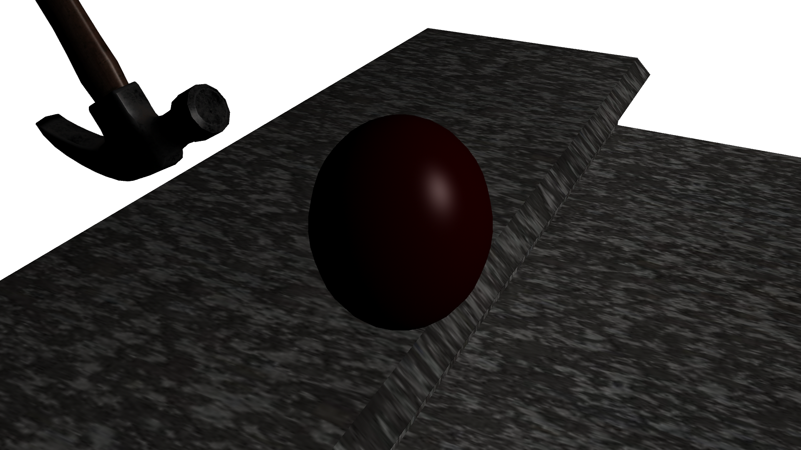
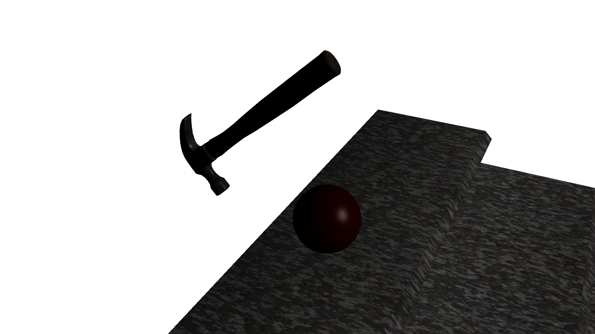
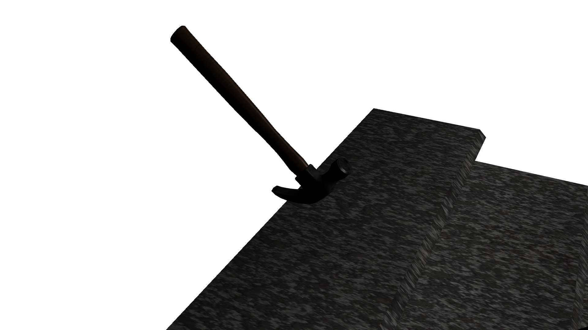
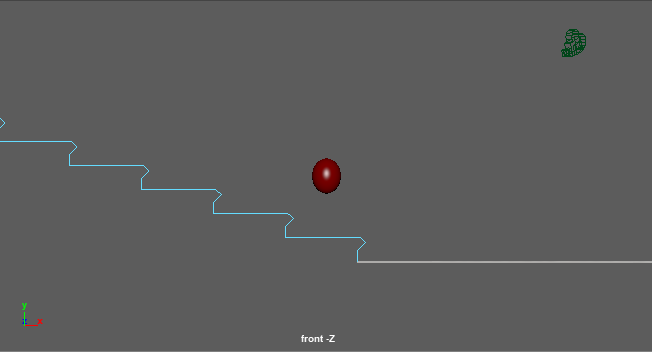

Note how in the final animation, the plunger has been replaced with a hammer. This is due to me not finding any good plunger models (most were of toilet plungers), so I switched to a hammer instead. I was inspired to add in a cannonball due to last year's projects and to try my hand at squashing the ball really flat. The bouncy ball getting squashes was inspired by Luxo Jr, although obviously a cannonball is cooler than a lamp.
The bouncy ball squashes in response to being hit by the hammer, bouncing, and being crushed by the cannonball. It stretches as it gets to the top of its arcs.
The hammer pulls back before swinging to hit the ball.
The hammer continues to rotate after hitting the ball.
The bouncy ball travels in arcs as it bounces down the steps and across the floor. The hammer rotates through an arc as it swings.
Alternate:
Note how the squash and stretch applies not only to the bounces, but also as a reaction to getting hit by the hammer.
Rendered with Maya's Software Renderer. The sky background was inspired by me listening to Led Zeppelin's "Stairway To Heaven". The texture was called a marble texture, but it is darker than marble so I would personally consider it more of a diabase. The song is one I didn't hear until a few weeks ago when I heard it on my Spotify disocvery playlist. I instantly knew it was the perfect sng for this project.
Music: "Big Balls" by AC/DC. For your listening pleasure